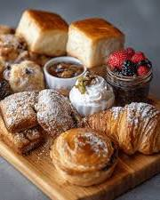

Something for every kind of day



Good things, baked close to home
Sweet Clover is a local bakery and custom dessert shop in Maryville, Missouri. For a break between classes, a treat to bring home or a reason to gather, theres a sweet place to start.
Good to know before you go
Do you offer delivery?
At this time, Sweet Clover offers bakery pickup. Delivery may be available for select large orders by special arrangement.
Do you accept custom orders?
Yes. We offer custom cakes, cookies, cupcakes, and dessert boxes for a variety of occasions.
Make room for a bakery stop
Address
123 Main Street, Maryville, MO 64468
Hours
Monday: 7:00 a.m.–3:00 p.m.
Tuesday: 7:00 a.m.–3:00 p.m.
Wednesday: 7:00 a.m.–3:00 p.m.
Thursday: 7:00 a.m.–5:00 p.m.
Friday: 7:00 a.m.–5:00 p.m.
Saturday: 8:00 a.m.–2:00 p.m.
Sunday: Closed
Get in touch with Sweet Clover Bakery for questions or custom orders